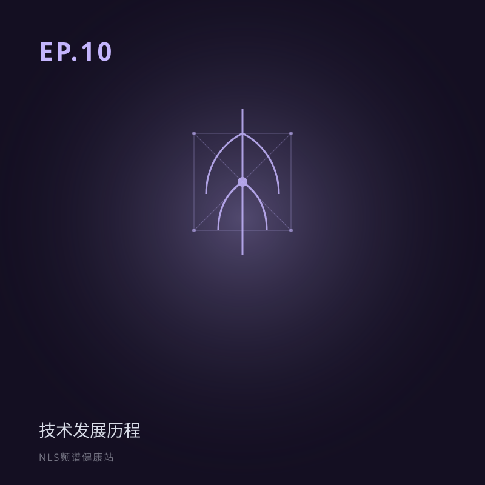

EP.10 NLS技术发展历程：从一个触发传感器到今天（37年）
所属专题：来路与去路
前九期讲 NLS「是什么、怎么用」，本期讲它「从哪来」。从 1980 年代理论，到 1988 年触发传感器，到走出实验室、商业化、软件代代升级——37 年的家谱。也诚实话它的身世。
NLS 技术发展历程：从一个触发传感器到今天的 37 年。梳理理论萌芽、硬件诞生、商业化与软件代际，梳理技术演进脉络。关键词：技术史、Metatron、触发传感器、发展脉络。
分段要点
-
00:00开场：它从哪来 回顾前九期，转向身世。
-
03:00理论萌芽（1980s） QELT 创立；非主流底色；太空医学故事拆解。
-
09:00硬件诞生（1988） 触发传感器；关键机构与人物记载。
-
16:00实验室到市场 临床试验、商业化、2D→3D→4D、软件代际。
-
23:00能力扩展与认证 诊疗一体化、远程、FDA/CE 定位说明。
#技术史#触发传感器#Metatron#发展历程#认证
阅读完整文字稿（小乐 / 小思对话全文）